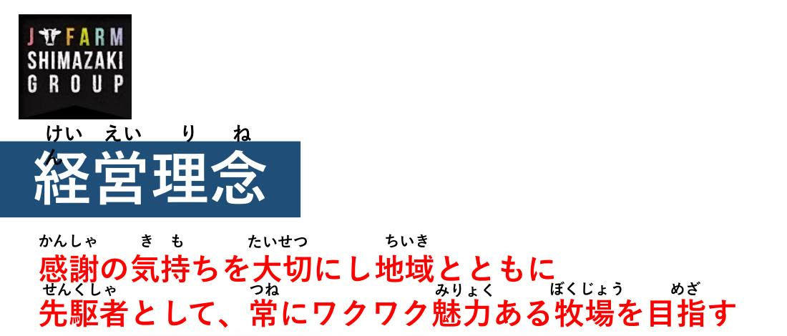

Izumikawa, Betsukai — 泉川
一棟400頭の搾乳牛舎が、二棟。
1948年、初代・昭七が長野から入植した土地。いまは三代目・洋介が、20人のスタッフと約1,200頭の牛を預かっています。
1,200頭
飼養頭数（子牛を除く）
60〜80頭
毎月生まれる子牛
20人
スタッフ（15人が海外から）
「こだわりっていうこだわりはない。
当たり前のことを、ちゃんとやってるだけ」三代目代表 島崎 洋介

Betsukai, Hokkaido — Since 1948
別海町で三代、1,200頭の牛とともに。
Descend
Izumikawa, Betsukai — 泉川
1948年、初代・昭七が長野から入植した土地。いまは三代目・洋介が、20人のスタッフと約1,200頭の牛を預かっています。
1,200頭
飼養頭数（子牛を除く）
60〜80頭
毎月生まれる子牛
20人
スタッフ（15人が海外から）
「こだわりっていうこだわりはない。
当たり前のことを、ちゃんとやってるだけ」三代目代表 島崎 洋介
其の二
デントコーンと牧草が軸。分娩後・泌乳ピーク・乾乳前で牛群を分け、群ごとに餌を組む。同じ餌でも季節と寒暖差で合わなくなる。乳成分を見ながら、毎週の繁殖検診を見ながら、組み直し続けます。
「餌なんてね、永遠の課題なんだよ、酪農家にとっては」搾乳牛舎で

其の四
あえてロボットではなく、パラレルパーラー。可動部は地下のピットに置き、牛も人も静かに働ける。朝晩2回、一頭ずつ、人の目が通ります。
「パーラーは人が一頭一頭牛を見れるから。調子の悪い牛とか、牛乳が少なくなったよねとか、目で見て分かるのが一番」パーラーで
其の五
乾乳・分娩舎は、牛舎の移動ひとつで分娩事故が増える場所。毎月60〜80頭が生まれ、子牛は初乳3日、粉ミルク6リットル、2ヶ月で離乳。ここでの健康が、そのまま乳牛の一生に響きます。
「子牛の時から元気よく育ってないと、いい乳牛にはならない。本当にならない」子牛舎で
其の三
所有290ha＋借地200haの草地で、粗飼料はほぼ全量自給。サイレージは発酵品質にいちばんこだわる。基本は乳酸菌、ギ酸は水分の多い早い草のときだけ。
「良いサイレージってのは、牛が食うサイレージ。人間が良いじゃなくて、牛が食うかどうか。なおかつ、ちゃんと牛乳が出るサイレージ」ロールの前で

其の一
スタッフ20人のうち15人が、中国・ベトナム・フィリピン・インドネシアから。社内の資料には全部ふりがなが振ってあります。酪農の経験より、牛を見る目を一緒に育てられる人を待っています。
「日本人だろうが外国人だろうが、言葉が違うだけ。下手したら俺よりうちのこと知ってるわ」三代目代表 島崎 洋介

Company
Since 1948
1948
初代・島崎昭七、別海町泉川に入植長野県出身。戦後まもなく酪農を始める。2009
直営焼肉店「牛肉本舗くろ」開業・EC開始弟子屈町。自社加工場を備える。2018
ちえのわ事業協同組合 設立地元酪農家と。牧場別の牛乳とジェラート。2021
三代目・島崎洋介が経営継承2026
ミルワングランプリ 第2位5〜6回目の出品で初入賞。「来年は1位」。